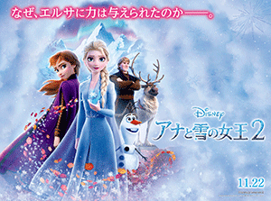
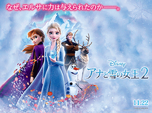
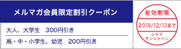
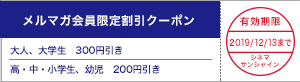

| シネマサンシャインメールマガジン 2019/11/22号【グランドシネマサンシャイン版】 |
 |
毎月1日は映画サービスデー
どなたさまでも1,200円でご鑑賞いただけます。 次回は再来週12/1（日）です！ ※3D、4DX、IMAX、ATMOS、dts-x、ScreenX、BESTIAは別途追加料金が必要となります。 |
オススメ作品
『アナと雪の女王2』
11/22（金）公開
©2019 Disney. All Rights Reserved.
かつて、真実の愛によって姉妹の絆を取り戻したエルサとアナ。 3年の歳月が過ぎ、アレンデール王国の女王となったエルサは、アナ、クリストフ、そしてオラフと共に幸せな日々を過ごしていた。 だが、エルサにしか聞こえない不思議な“歌声”に導かれ、姉妹はクリストフとオラフを伴い、アレンデール王国を離れて未知なる世界へ。 それは、エルサの“魔法の力”の秘密を解き明かす、驚くべき旅の始まりだった…。 姉妹の物語がついに完結へ！
監督：クリス・バック ジェニファー・リー
出演：クリステン・ベル イディナ・メンゼル ジョナサン・グロフ ジョシュ・ギャッド
出演：クリステン・ベル イディナ・メンゼル ジョナサン・グロフ ジョシュ・ギャッド
『決算！忠臣蔵』
11/22（金）公開
©2019「決算！忠臣蔵」製作委員会
誰もが知る「忠臣蔵」の、誰にも言えない予算の話を「殿、利息でござる」の中村義洋が監督・脚本を手掛ける時代劇コメディ。 一大プロジェクト【仇討ち】を、無事に【決算】させるため、節約やリストラなど予算内で仇討を成功させるべく奮闘する浪士たち……。 金欠に悩まされるリーダー・内蔵助を堤真一、ワーキングプアなそろばん侍・矢頭を岡村隆史がそれぞれ関西弁で演じる。
監督：中村義洋
出演：堤真一 岡村隆史 濱田岳 横山裕 荒川良々 妻夫木聡
出演：堤真一 岡村隆史 濱田岳 横山裕 荒川良々 妻夫木聡
上映作品


ニュース
○『アナと雪の女王２』公開記念プレゼントキャンペーン開催！！シネマサンシャイン公式アプリから予告動画を見て応募しよう！
『アナと雪の女王２』公開記念のプレゼントキャンペーンを開催中です。 シネマサンシャイン公式スマートフォンアプリ(無料)から予告動画を見てご応募いただいた方の中から抽選で『アナと雪の女王２』豪華グッズをプレゼント！
応募締切：2020年1月10日（金）
 ">
">
応募締切：2020年1月10日（金）
">○シネマサンシャインの新しい会員サービス『シネマサンシャイン リワード』スタート！
もっともっとオトクに映画を観よう！６ポイントで１回鑑賞無料！毎週木曜は1,100円鑑賞などお得なサービスがいっぱいです！シネマサンシャインアプリから新しい会員サービスへ登録いただけます。 是非ご登録ください。
全劇場で対応開始！
※年会費500円あり
全劇場で対応開始！
※年会費500円あり

○シネマサンシャインリワード会員限定、日本最大スクリーンで『スター・ウォーズ／スカイウォーカーの夜明け』を家族で鑑賞しよう！
シネマサンシャインリワード会員のお客様の中から270名の小学生をグランドシネマサンシャインIMAXシアター『スター・ウォーズ／スカイウォーカーの夜明け』上映回にご招待！
開催日時：12月24日（火）午後予定
※シネマサンシャインリワード会員限定（年会費500円あり）
※小学生のお子様１名様につき、保護者１名様がご同伴ください。
※保護者の方はIMAX2Dの鑑賞料金が必要となります。
応募締切：12月8日（日）
詳しくはこちらhttps://cinemasunshine.info/cp/promotion/gdcs_skywalker
開催日時：12月24日（火）午後予定
※シネマサンシャインリワード会員限定（年会費500円あり）
※小学生のお子様１名様につき、保護者１名様がご同伴ください。
※保護者の方はIMAX2Dの鑑賞料金が必要となります。
応募締切：12月8日（日）
詳しくはこちらhttps://cinemasunshine.info/cp/promotion/gdcs_skywalker
○『アナと雪の女王２』がついに公開！ありのままのその先へ！エルサとアナの出す答えとは？
"日本中に“Let It Go”の歌声があふれ、世代を超え、世界中で社会現象を巻き起こす”奇跡“を成し遂げたディズニーの金字塔『アナと雪の女王』。 待望の最新作、『アナと雪の女王２』がいよいよ公開！
果たして『アナと雪の女王２』では何が描かれるのだろうか？
本作の物語について、監督のひとりであるジェニファー・リーは、「前作、『アナと雪の女王』が、ハッピーエンドだったとするなら、この作品は、そのハッピーエンドの後に、描かれるべき物語だと思いました」と語る。 「“人生”そのものが、エルサにとってある種の壁となってくるのです。 つまり、この物語は、自分の居場所を作るすべを学ぶこと、そして、正しいことや、大人としてやらなければいけない多くの事柄を描いているのです」と本作を語る。 加えて「もちろんこの作品では、楽しさやユーモアもありますが、将来自分がどんな人間になるべきなのかを見出していく、観客の感情を揺さぶるようなストーリーになっていると思います」と、この物語へ込めたメッセージを語った。
なぜ自分だけ特別な力を持っているのか、なぜ自分だけ周りと違うのかという疑問を抱き、幸せな日々を送りながらも、この“力”のせいで、どこかで“このままではいられない”と感じ、その謎を解き明かすために新たな世界へ進むことを選択するエルサ。 大事なエルサとの幸せな生活を壊したくないと願い、彼女のことを守るためエルサと共に旅に出ることを決意したアナ。 それぞれが不安や希望を抱きながら、”心のままに“未知の世界へ一歩踏み出した２人の新たな選択によって、どんな冒険が繰り広げられることとなるのか。
心の声に正直に進む彼女らの姿と、その結末が生むかつてない感動は、一歩踏み出そうと迷っている人たちの背中を押してくれるに違いない。
素晴らしい楽曲の数々、心の奥にある感情を刺激させられるストーリー…2019年、再び日本中に「アナ雪」旋風を巻き起こすに違いない！
★『アナと雪の女王２』感想コメントを投稿すると抽選で豪華賞品をプレゼント！
https://www.disney.co.jp/movie/anayuki2.html/

果たして『アナと雪の女王２』では何が描かれるのだろうか？
本作の物語について、監督のひとりであるジェニファー・リーは、「前作、『アナと雪の女王』が、ハッピーエンドだったとするなら、この作品は、そのハッピーエンドの後に、描かれるべき物語だと思いました」と語る。 「“人生”そのものが、エルサにとってある種の壁となってくるのです。 つまり、この物語は、自分の居場所を作るすべを学ぶこと、そして、正しいことや、大人としてやらなければいけない多くの事柄を描いているのです」と本作を語る。 加えて「もちろんこの作品では、楽しさやユーモアもありますが、将来自分がどんな人間になるべきなのかを見出していく、観客の感情を揺さぶるようなストーリーになっていると思います」と、この物語へ込めたメッセージを語った。
なぜ自分だけ特別な力を持っているのか、なぜ自分だけ周りと違うのかという疑問を抱き、幸せな日々を送りながらも、この“力”のせいで、どこかで“このままではいられない”と感じ、その謎を解き明かすために新たな世界へ進むことを選択するエルサ。 大事なエルサとの幸せな生活を壊したくないと願い、彼女のことを守るためエルサと共に旅に出ることを決意したアナ。 それぞれが不安や希望を抱きながら、”心のままに“未知の世界へ一歩踏み出した２人の新たな選択によって、どんな冒険が繰り広げられることとなるのか。
心の声に正直に進む彼女らの姿と、その結末が生むかつてない感動は、一歩踏み出そうと迷っている人たちの背中を押してくれるに違いない。
素晴らしい楽曲の数々、心の奥にある感情を刺激させられるストーリー…2019年、再び日本中に「アナ雪」旋風を巻き起こすに違いない！
★『アナと雪の女王２』感想コメントを投稿すると抽選で豪華賞品をプレゼント！
https://www.disney.co.jp/movie/anayuki2.html/

©2019 Disney. All Rights Reserved.
○シネマサンシャイン「おやこシネマ」続々開催決定！
子育て中のママ、パパがお子さま連れで一緒に映画を鑑賞できる上映会を開催いたします。
小さいお子さま連れでの映画鑑賞は…
「びっくりして泣いてしまったら…」
「暗いので子供が怖がるかも…」
「子供がおしゃべりしたり歩き回るかも…」
そんな不安や心配がつきないママ、パパの為の上映会です。
音量が通常よりも小さめで、照明も明るめに設定されており、
小さなお子様でも怖がることなくご鑑賞いただけます。
今後の実施は下記となります。
11月26日(火)『アナと雪の女王２』
12月10日(火)『午前0時、キスしに来てよ』
12月17日(火)『ルパン三世 THE FIRST』

小さいお子さま連れでの映画鑑賞は…
「びっくりして泣いてしまったら…」
「暗いので子供が怖がるかも…」
「子供がおしゃべりしたり歩き回るかも…」
そんな不安や心配がつきないママ、パパの為の上映会です。
音量が通常よりも小さめで、照明も明るめに設定されており、
小さなお子様でも怖がることなくご鑑賞いただけます。
今後の実施は下記となります。
11月26日(火)『アナと雪の女王２』
12月10日(火)『午前0時、キスしに来てよ』
12月17日(火)『ルパン三世 THE FIRST』
○メルマガ会員限定割引クーポンプレゼント！
メルマガ会員様限定でお得な割引クーポンをプレゼント！
以下の画面をチケット購入時にご提示ください。
PCでご覧のお客様は該当部分を印刷してご提示ください。

以下の画面をチケット購入時にご提示ください。
PCでご覧のお客様は該当部分を印刷してご提示ください。

※有効期限は12月13日までになります。
※割引券1枚で2名様まで有効。 他の割引サービスとの併用はできません。
※特別興行などご利用いただけない場合がございます。
※インターネット購入（e-box、ムビチケ)ではご利用いただけません。
※期間中何回でもご利用頂けます。
池袋、ユーカリが丘、大和郡山、北島、下関、姶良の自動券売機では下記QRをご利用ください。
【一般・大学生】
【高校生以下】

【一般・大学生】
【高校生以下】
ムービークイズ
○前回のクイズ
11/8公開『ターミネーター：ニュー・フェイト』でシリーズ復帰したアーノルド・シュワルツェネッガーですが、愛娘の結婚相手は有名俳優です。 その人は誰でしょう。
ヒント：マーベルコミック映画でヒーローを演じています。
11/8公開『ターミネーター：ニュー・フェイト』でシリーズ復帰したアーノルド・シュワルツェネッガーですが、愛娘の結婚相手は有名俳優です。 その人は誰でしょう。
ヒント：マーベルコミック映画でヒーローを演じています。
答え：クリス・プラット
『ガーディアンズ・オブ・ギャラクシー』の主人公スター・ロード役を『アベンジャーズ/インフィニティ・ウォー』『アベンジャーズ/エンドゲーム』でも演じています。
『ガーディアンズ・オブ・ギャラクシー』の主人公スター・ロード役を『アベンジャーズ/インフィニティ・ウォー』『アベンジャーズ/エンドゲーム』でも演じています。
○今回のクイズ
11/22公開『アナと雪の女王2』で前作に引き続きエルサ 役のイディナ・メンゼルはブロードウェイの舞台をメインに活躍する女優さんですが、過去にディズニーの実写映画に出演しています。 その作品はなんでしょう？
11/22公開『アナと雪の女王2』で前作に引き続きエルサ 役のイディナ・メンゼルはブロードウェイの舞台をメインに活躍する女優さんですが、過去にディズニーの実写映画に出演しています。 その作品はなんでしょう？
答えは、次回のシネマサンシャインメールマガジンで！